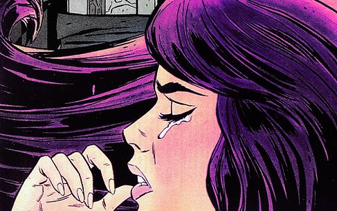
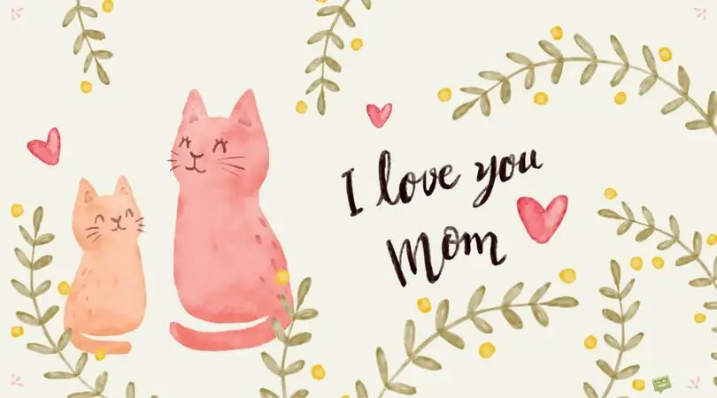

Undoubtedly, she is the most wonderful person in my life. Coming to her life... she was born on December 23, 1984 in Vijayawada, Andhra Pradesh, India. I was born just 4 days after her birthday and I always felt super special about it. She spent all her childhood at her grandparent's house in Vijayawada itself. She was such a lovely girl anyone would love to have. Her eyes are as glorious as the full moon's brightness. Her caring Grandpa, loving Grandma and most importantly most important person of her life that is her Uncle, Srinivas. Srinivas brought 3-months old munni from her mother who lives in kakinada, as she was unable to feed munni with milk. Munni's mom Lakshmi is the epitome of bravery and strength. She always stood strong for her children's life. Munni is the most important person in the lives of all these people.
Munni has gone to Krishna prasanna school and Krishnaveni school that are also located in Vijayawada. She was always given the best by her family. She have also gone on a trip to Delhi, Agra where she had beautiful pictures of her with the Taj Mahal. This girl got the haircut she wanted and damn she lives the life of a princess. She got slaves for her. She gets new clothes every now and then. She fires crackers from dawn to dusk on Diwali. She got the straight, soft and long hair that made her look like a beauty. Munni got a little sister Nandu who later played a great role in the lives of Munni's children. Everything was so good not until munni turned 17.
Such a loving girl was trapped by a demon in the name of love. Munni's best friend named Haritha was loving a boy in secret and she shared all those secrets with munni. She used to admire that man named RK so much that the adoration was slowly shifted to munni. Although munni had feelings for him she never kept that out. Now out of nowhere haritha claimed that she isn't loving RK anymore. Munni found it as a good sign of god for her to proceed. This manipulative man acted as he was suffering from a heartbreak and got close to munni. Munni felt that her whole was going to be beautiful and happy with that man. He used to show great amount of love in the very beginning. Munni was so in love with him that she immediately said ok to his marriage proposal. Munni's parents, grandparents and especially her uncle, everyone told her to wait until she is graduated so then she can marry him. She even attempted suicide to marry him. But even RK knows that if munni gets better education she knows what to do and what not to. Then the chances of munni falling for his manipulations will be low. So RK forced munni for marriage.
Right after turning 18, with all the hopes for a beautiful life, munni left her whole family for this man whom she doesn't know is a manipulator. They got married in a secret place and very soon munni's family were heart broken. Even then, munni's family supported her and took her back. They accepted her marriage and RK. He showed a beautiful life to munni until first 1 year, I mean until I was born. After that RK brought out the animal in him. He started harassing munni for money and property. He hits her so badly that she used to run to places to hide. He hits her with his hand, belt, stick, broom, cooker's lid and whatever he gets into his hand. Poor munni didnt't find a way out. She never told any of this to her family as they may blame her choice. Very soon RK turned into a rougue, alcohol addict who doesn't care about the family. He sometimes shows his best side of being a caring husband and father then suddenly turns into a drunken beast who even hits his kids. Munni started working at a college as a Lab technician to pay my school fees and feed me and spoiled brat RK. From four years I was born, I got a baby brother. When munni was pregnant with my brother she barely had nothing to eat. And so is my brother born weak. My brother satya loved her so much and obviously my mum also loved him so much. Later shee worked so hard to make me and brother go to good scchool. Munni's parents are by her side when she is in need of any financial help. But munni never got any emotional support. She felt alone most of the times. She always wanted to die because of the unbearable torture by RK. But she tried her best to survive just for the sake of her children.
Every human has a level of patience and endurance. Munni's level was reached. When I am one day away from giving my class 10 prefinals and my brother is in his class 6, Munni hung herself. She fought fought fought until then and she accepted her defeat.
The pain of losing her is enormous but the fact that she can be at peace in heaven is the only happines. I also feel it would be so good if she just left RK to hell and move out with us. Me and my brother were taken good care by my grandparent's and aunt(munni's parents and sister). She left us in safe hands. I love you MAA.
